Computational-Physics
An undergraduate course taught at Hebei Normal University.
This page is the HTML version of the course notes and is intended to be viewed through GitHub Pages at https://llyq17.github.io/Computational-Physics/README.html.
1. Introduction and why interpolation
Interpolation is a numerical technique used to estimate values of a function at points that are not directly given by the data. In scientific computing and experimental physics, measurements are often available only at discrete sample points, while the underlying behavior is continuous. Interpolation provides a practical way to reconstruct a smooth curve between known values, which is useful for data analysis, visualization, and numerical simulation.
Interpolation is especially important because many physical quantities are observed only at selected positions or times. Instead of treating the data as a set of isolated points, we can use interpolation to obtain a reasonable approximation of the function between those points. Compared with direct measurement, interpolation is often more efficient and helps us understand the trend of the data.
1.1 Lagrange interpolation
Lagrange interpolation constructs a polynomial that passes through all given data points. For points (x0, y0), (x1, y1), …, (xn, yn), the interpolation polynomial is written as a sum of basis polynomials:
This method is straightforward and is often used when the number of sample points is small. Its advantage is that the polynomial is guaranteed to pass through every given point. However, for large numbers of data points, the resulting polynomial may become unstable and oscillatory.
import os
import numpy as np
import matplotlib.pyplot as plt
from scipy.interpolate import lagrange
# 如果 Figures 文件夹不存在，则自动创建
os.makedirs("Figures", exist_ok=True)
def linear_interpolation(x_nodes, y_nodes, x):
"""
一次拉格朗日插值，即分段线性插值。
对每个计算点，选取其所在区间的两个相邻节点，
再调用 scipy.interpolate.lagrange 构造一次多项式。
"""
y_linear = np.empty_like(x, dtype=float)
n_nodes = len(x_nodes)
for k, x_value in enumerate(x):
if x_value <= x_nodes[0]:
start = 0
elif x_value >= x_nodes[-1]:
start = n_nodes - 2
else:
right = np.searchsorted(x_nodes, x_value, side="right")
start = right - 1
polynomial = lagrange(
x_nodes[start:start + 2],
y_nodes[start:start + 2]
)
y_linear[k] = polynomial(x_value)
return y_linear
# 在区间 [0, 2π] 上构造 9 个等距插值节点
x_nodes = np.linspace(0.0, 2.0 * np.pi, 9)
y_nodes = np.sin(x_nodes)
# 构造致密网格，用于绘图和误差计算
x = np.linspace(0.0, 2.0 * np.pi, 2000)
y_true = np.sin(x)
# 一次拉格朗日插值
y_linear = linear_interpolation(x_nodes, y_nodes, x)
error_linear = np.abs(y_linear - y_true)
# 一次拉格朗日插值曲线
plt.figure(figsize=(10, 6))
plt.scatter(x_nodes, y_nodes, s=60, label="Nine data points", zorder=3)
plt.plot(x, y_linear, linewidth=2, label="Degree-1 Lagrange interpolation")
plt.plot(x, y_true, "--", linewidth=2, label="True function: sin(x)")
plt.xlabel("x")
plt.ylabel("f(x)")
plt.title("Piecewise Linear Lagrange Interpolation")
plt.grid(alpha=0.25)
plt.legend()
plt.tight_layout()
plt.savefig("Figures/linear_lagrange.png", dpi=300, bbox_inches="tight")
plt.show()
# 一次拉格朗日插值误差
plt.figure(figsize=(10, 6))
plt.plot(x, error_linear, "--", linewidth=2, label="Absolute error")
plt.xlabel("x")
plt.ylabel(r"$|P_1(x)-\sin(x)|$")
plt.title("Error of Piecewise Linear Lagrange Interpolation")
plt.grid(alpha=0.25)
plt.legend()
plt.tight_layout()
plt.savefig("Figures/linear_lagrange_error.png", dpi=300, bbox_inches="tight")
plt.show()Linear Lagrange interpolation
A piecewise linear interpolation example for sin(x) is shown below.
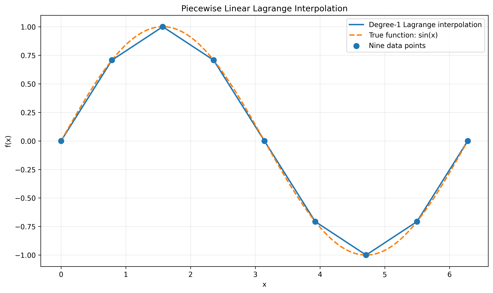
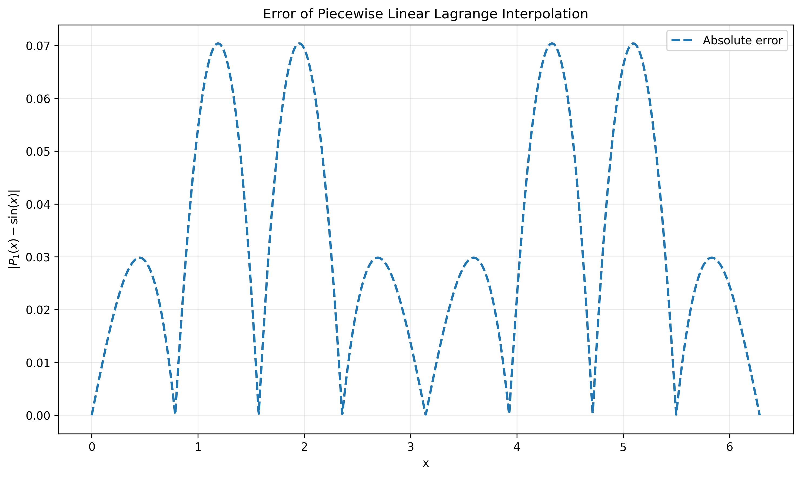
Quadratic Lagrange interpolation
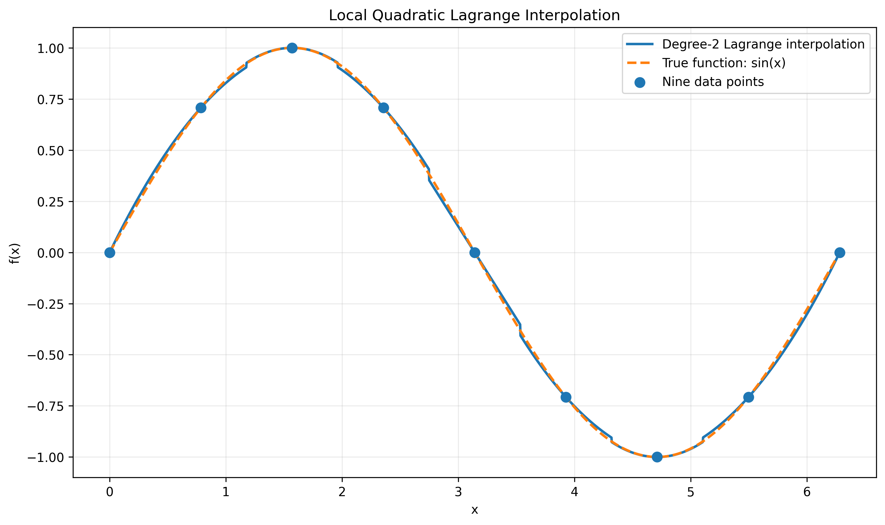
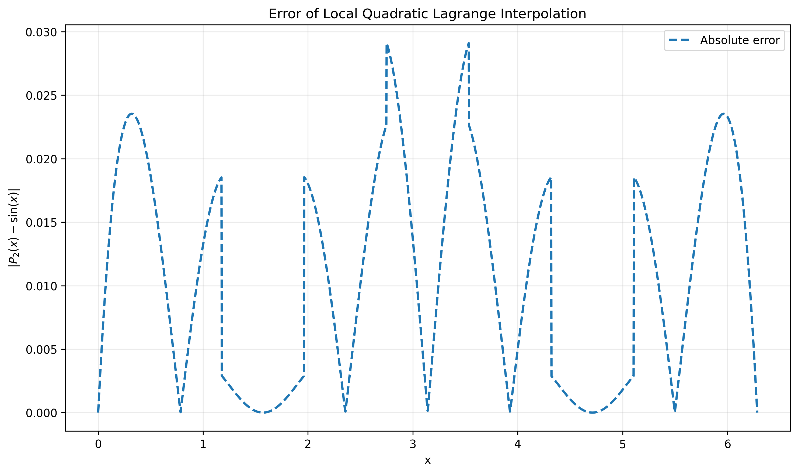
Global degree-8 Lagrange interpolation
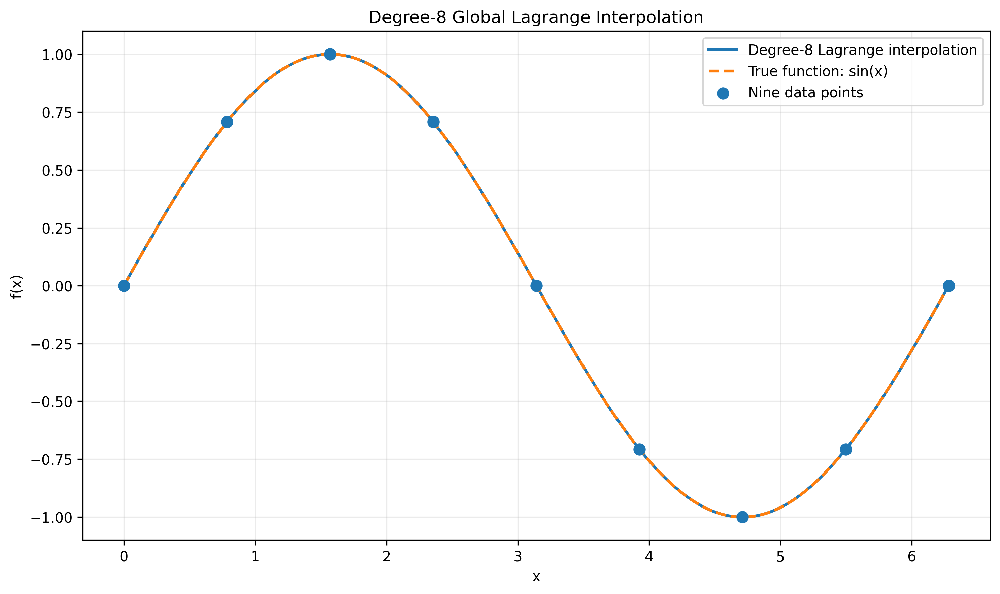
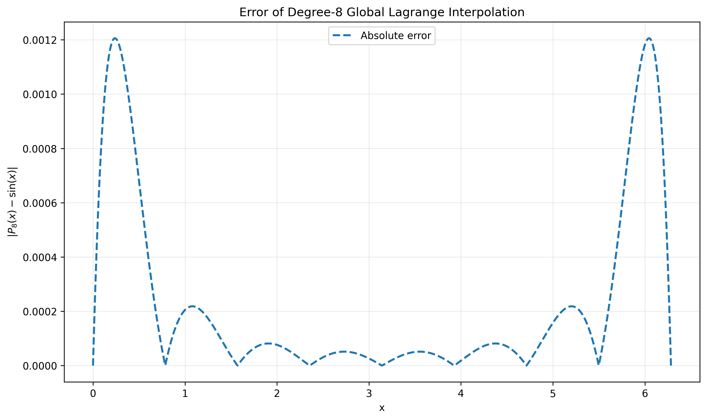
The notebook Code/lagrange_interpolation.ipynb compares several approaches.
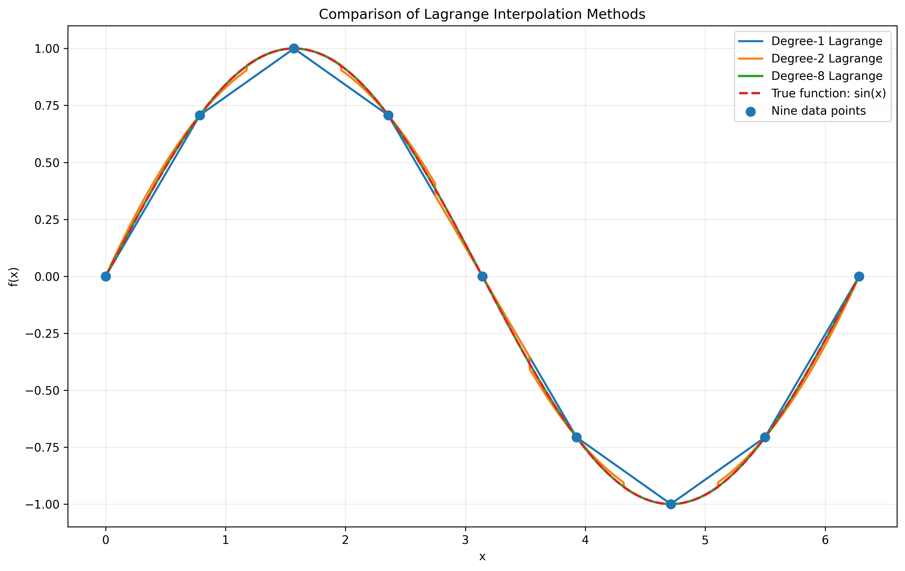
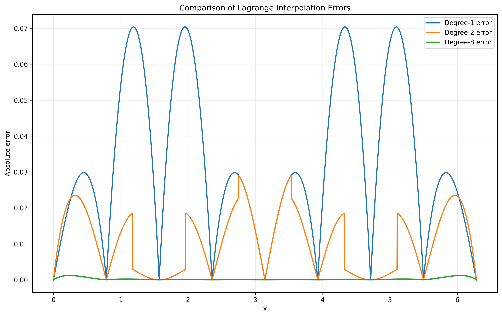
1.2 Newton interpolation
Newton interpolation is another polynomial interpolation method. It expresses the interpolation polynomial in a form based on finite differences, making it convenient for adding new data points incrementally. In general, the Newton form can be written as:
where the coefficients a_k are determined by divided differences. This formulation is especially useful because when a new data point is added, only the new divided differences are needed, so the interpolation polynomial can be updated efficiently.
import os
import numpy as np
import matplotlib.pyplot as plt
# 如果 Figures 文件夹不存在，则自动创建
os.makedirs("Figures", exist_ok=True)
def divided_difference(x_nodes, y_nodes):
"""
计算牛顿插值的差商表和差商系数。
返回：
table 完整差商表
coefficients 牛顿插值多项式的系数
"""
x_nodes = np.asarray(x_nodes, dtype=float)
y_nodes = np.asarray(y_nodes, dtype=float)
n = len(x_nodes)
# 差商表第一列为函数值
table = np.zeros((n, n), dtype=float)
table[:, 0] = y_nodes
# 逐阶计算差商
for j in range(1, n):
for i in range(n - j):
table[i, j] = (
table[i + 1, j - 1] - table[i, j - 1]
) / (
x_nodes[i + j] - x_nodes[i]
)
# 牛顿插值系数位于差商表第一行
coefficients = table[0, :].copy()
return table, coefficients
def newton_interpolation(x_nodes, coefficients, x):
"""
根据牛顿差商系数计算插值多项式。
采用嵌套乘法形式计算，避免直接展开高次多项式。
"""
x_nodes = np.asarray(x_nodes, dtype=float)
coefficients = np.asarray(coefficients, dtype=float)
x = np.asarray(x, dtype=float)
# 从最高阶系数开始进行嵌套计算
y = np.full_like(x, coefficients[-1], dtype=float)
for k in range(len(coefficients) - 2, -1, -1):
y = coefficients[k] + (x - x_nodes[k]) * y
return y
# 在区间 [0, 2π] 上构造 9 个等距插值节点
x_nodes = np.linspace(
0.0,
2.0 * np.pi,
9
)
# 节点对应的函数值
y_nodes = np.sin(x_nodes)
# 构造致密网格，用于绘图和误差计算
x = np.linspace(
0.0,
2.0 * np.pi,
2000
)
# 原函数真值
y_true = np.sin(x)
# 计算差商表和牛顿插值系数
difference_table, coefficients = divided_difference(
x_nodes,
y_nodes
)
# 计算牛顿插值结果
y_newton = newton_interpolation(
x_nodes,
coefficients,
x
)
# 计算绝对误差
error_newton = np.abs(
y_newton - y_true
)
print("牛顿插值系数：")
for i, value in enumerate(coefficients):
print(f"a[{i}] = {value:.12e}")
print()
print(
"牛顿插值最大绝对误差：",
np.max(error_newton)
)
plt.figure(figsize=(10, 6))
plt.scatter(
x_nodes,
y_nodes,
s=60,
label="Nine data points",
zorder=3
)
plt.plot(
x,
y_newton,
linewidth=2,
label="Newton interpolation"
)
plt.plot(
x,
y_true,
"--",
linewidth=2,
label="True function: sin(x)"
)
plt.xlabel("x")
plt.ylabel("f(x)")
plt.title("Newton Interpolation of sin(x)")
plt.grid(alpha=0.25)
plt.legend()
plt.tight_layout()
plt.savefig(
"Figures/newton_interpolation.png",
dpi=300,
bbox_inches="tight"
)
plt.show()
# ==========================================================
# 牛顿插值误差
# ==========================================================
plt.figure(figsize=(10, 6))
plt.plot(
x,
error_newton,
"--",
linewidth=2,
label="Absolute error"
)
plt.xlabel("x")
plt.ylabel(r"$|P_8(x)-\sin(x)|$")
plt.title("Absolute Error of Newton Interpolation")
plt.grid(alpha=0.25)
plt.legend()
plt.tight_layout()
plt.savefig(
"Figures/newton_interpolation_error.png",
dpi=300,
bbox_inches="tight"
)
plt.show()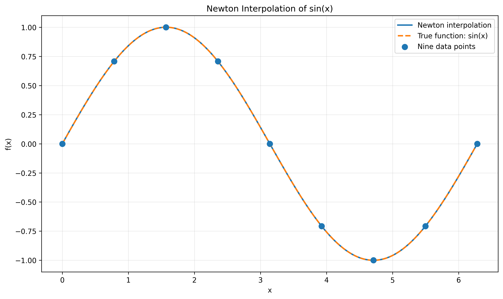
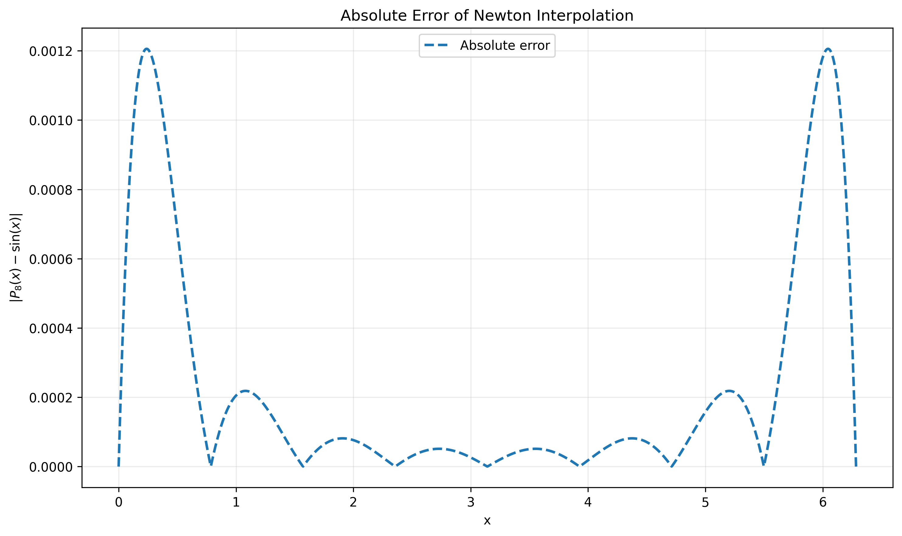
1.3 Cubic spline interpolation
Cubic spline interpolation is a piecewise polynomial method in which the interval between neighboring data points is represented by a cubic polynomial. On each subinterval [x_i, x_{i+1}], one writes
The spline is constructed so that the function values, first derivatives, and second derivatives are continuous at the knots. This produces a smooth curve and avoids the large oscillations that may appear in high-degree polynomial interpolation. Because of its smoothness and stability, cubic spline interpolation is widely used in engineering, computer graphics, and scientific data fitting. It is often preferred when a visually smooth and physically reasonable curve is needed.
import os
import numpy as np
import matplotlib.pyplot as plt
from scipy.interpolate import CubicSpline
# 如果 Figures 文件夹不存在，则自动创建
os.makedirs("Figures", exist_ok=True)
# 在区间 [0, 2π] 上构造 9 个等距插值节点
x_nodes = np.linspace(
0.0,
2.0 * np.pi,
9
)
# 节点对应的函数值
y_nodes = np.sin(x_nodes)
# 构造致密网格，用于绘图和误差计算
x = np.linspace(
0.0,
2.0 * np.pi,
2000
)
# 原函数真值
y_true = np.sin(x)
# 构造自然三次样条插值函数
# bc_type="natural" 表示左右端点的二阶导数为 0
spline = CubicSpline(
x_nodes,
y_nodes,
bc_type="natural"
)
# 计算样条插值结果
y_spline = spline(x)
# 计算绝对误差
error_spline = np.abs(
y_spline - y_true
)
print(
"三次样条插值最大绝对误差：",
np.max(error_spline)
)
# ==========================================================
# 三次样条插值曲线
# ==========================================================
plt.figure(figsize=(10, 6))
plt.scatter(
x_nodes,
y_nodes,
s=60,
label="Nine data points",
zorder=3
)
plt.plot(
x,
y_spline,
linewidth=2,
label="Natural cubic spline interpolation"
)
plt.plot(
x,
y_true,
"--",
linewidth=2,
label="True function: sin(x)"
)
plt.xlabel("x")
plt.ylabel("f(x)")
plt.title("Natural Cubic Spline Interpolation of sin(x)")
plt.grid(alpha=0.25)
plt.legend()
plt.tight_layout()
plt.savefig(
"Figures/cubic_spline_interpolation.png",
dpi=300,
bbox_inches="tight"
)
plt.show()
# ==========================================================
# 三次样条插值误差
# ==========================================================
plt.figure(figsize=(10, 6))
plt.plot(
x,
error_spline,
"--",
linewidth=2,
label="Absolute error"
)
plt.xlabel("x")
plt.ylabel(r"$|S(x)-\sin(x)|$")
plt.title("Absolute Error of Natural Cubic Spline Interpolation")
plt.grid(alpha=0.25)
plt.legend()
plt.tight_layout()
plt.savefig(
"Figures/cubic_spline_interpolation_error.png",
dpi=300,
bbox_inches="tight"
)
plt.show()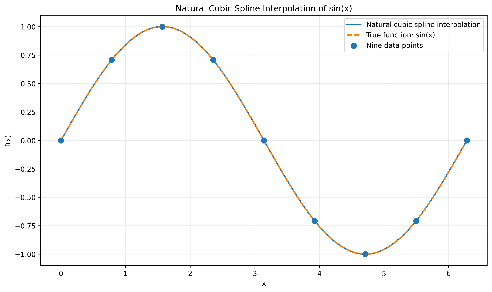
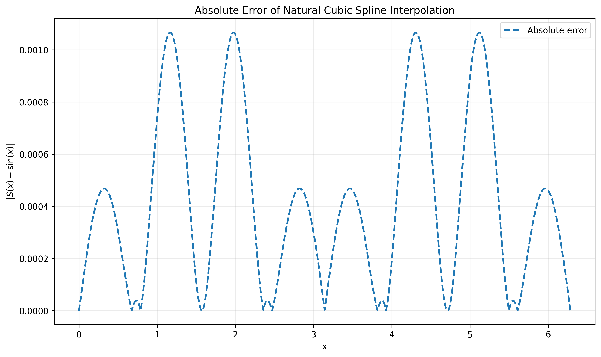
1.4 Runge's phenomenon
A classic warning about high-degree polynomial interpolation is Runge's phenomenon. If we interpolate the function f(x)=1/(1+x^2), x ∈ [-5,5], using many equally spaced nodes, the interpolating polynomial may oscillate strongly near the endpoints. This shows that increasing the degree of the polynomial does not always improve the approximation.
The notebook Code/runge_interpolation_comparison.ipynb compares several approaches and illustrates why piecewise and spline-based methods are often more stable.
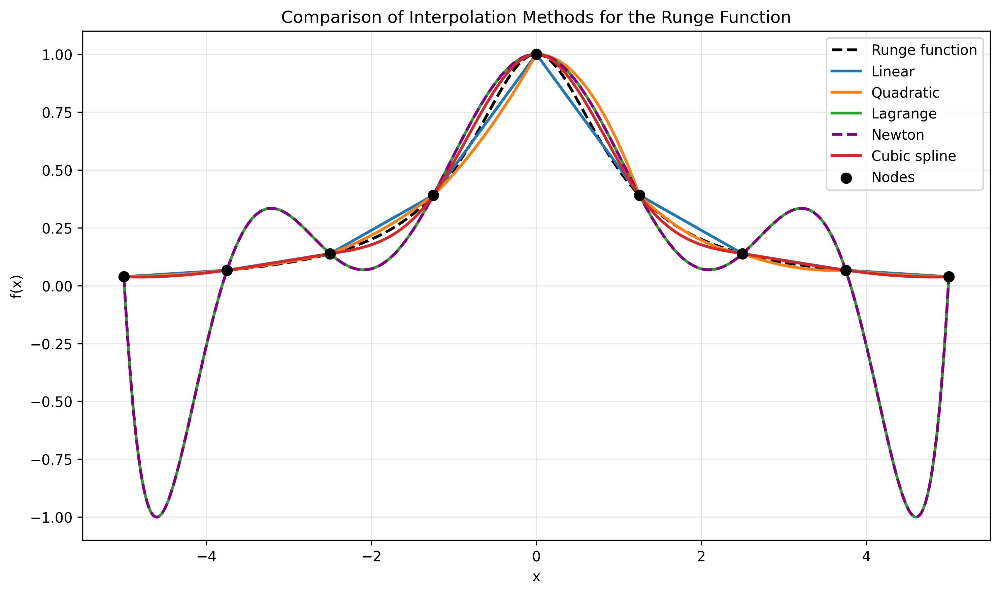